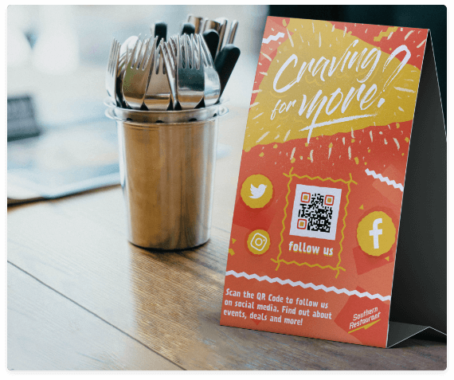
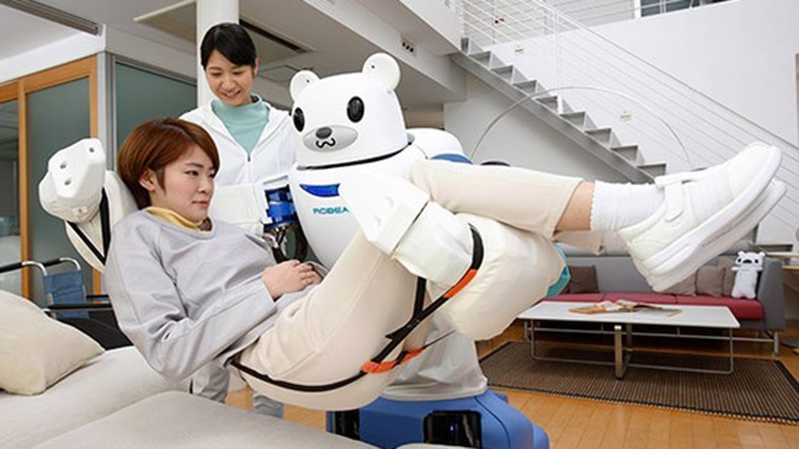

Gastronomica
 El mundo entero se está dando la oportunidad de evolucionar en la industria gastronomicaun ejemplo de ello, se está utilizando una nueva forma de atender a los clientes en los restaurantes anteriormente se les ofrecía un menú a cada uno de ellos(este era tomado con las manos y las personas sin darse cuenta entrar en contacto indirecto con los demas clientes o empleados al pasar el menu de mano en mano) ahora solo se necesitan dos cosas 1.-un teléfono celular con camara y 2.-un código QR el código solamente necesita ser leído por una aplicación y el menú lo puede tener cualquier persona desde su celular, esto puede también ayudar en el futuro porque viéndolo desde otro Angulo ya no se necitamos el uso de papel ni plástico entonces si todos los demás restaurantes lo implementan podemos cuidar al medio ambiente.
Comercio
del lado de la industria comercial es donde mas cambios se han causado pero todos estos para bien esta industria ya esta de porci muy avanzada en cuanto a la tecnologia en internet todos conocemos aplicaciones de compras que te llegan tus pedidos adomicilio
pero un avance muy bueno y realizado devido a las sircunstancias es la creacion de robots que nos llevan nuestro supermecado a las casas
 este robot usa inteligencia artificial (lo que quiere decir que nos conducido por nadie) y nos dicen que es capaz de llevar su contenido me manera segura acualquier lugar simplemente conociendo su direccion
una vez que este llegue a su destino la persona podrá recoger sus articulos usando los códigos que le llegaron al teléfono a la hora de la compra.
este robot usa inteligencia artificial (lo que quiere decir que nos conducido por nadie) y nos dicen que es capaz de llevar su contenido me manera segura acualquier lugar simplemente conociendo su direccion
una vez que este llegue a su destino la persona podrá recoger sus articulos usando los códigos que le llegaron al teléfono a la hora de la compra.ese gran robot solo es utilizado en Estados Unidos. pero hay mas paises que estan obtando por las misma idea un ejemplo de ello es colombia y europa este es un robot diseñado por la compañía Just Eat estos pequeñitos pueden llevar hasta 10 kilogramos o tres bolsas de la compra a una velocidad máxima de 6 kilómetros por hora,esta velocidad es similar al paso humano ya que todo el trayecto lo cubren por las aceras (con una bandera amarilla o roja para hacerlos más visibles) segun la empresa
Formas de pago
La forma tradicional de pago siempre ha sido por efectivo pero un metodo que tambien se esta aplicando es el pago mediante un telefono y un codigo QR este ha cambiado devido a que el intercambio de efectivo es una de las principales propagaciones del virus es es un pequeño cambio que ya anterior mente se estaba utilizando en otros paises pero mexico ya lo esta implementando ,pero esta accion tiene otro gran beneficio por ejemplo los robos ya que estos son muy comunes si en alguna ocasion llegaras a perder el telfono hay formas de desactivar la cuenta.
Medicina
Drones sanitizantesestos drones cuentan con capacidad de sanitizar 10 mil metros cuadrados son de gran tamaño ya que es utilizado en lugares donde hay mucho flujo de actividad se ocupa mas en el area agricola, la mescla que este utiliza para sanitizar es cloro con agua aunque es una mezcla muy sencilla es muy efectiva ,cabe aclarar que si el dron cuenta con un radar y no se puede acercar a menos de cuatro metros por ejemplo a un poste , los cables aereos y lleva un contror muy preciso haci evita dañarse
Telemedicina
Esta conciste en que cualquier persona que se sienta mal y necesite alguna consulta medica pueda consultar con su doctor sin necesidad de salir de su casa solo ocupa algun celular o computador y mediante una aplicacion ya podra estar en contacto con su medico con la telemedicina incluso podra llevar un tratamiento haci evitara ir a algun lugar donde pueda contraer el virus, la telemdicina se esta ocupado como el primer filtro efectivo para evitar mas brotes por que en muchos casos clas personas solo tienen gripe comun
Robots cirujanos y enfermeros
 Estos robots sirven para realizar cirugias complejas de maneras menos invasivas que los Ciruganos Son brazos robóticos que se usan a través de mandos y en el futuro se asuga que se añadirá un aparato de vídeo para extraer tumores que están en lugares de difícil acceso un ejemploes el robot "ViRob" que mide 14 milímetros y se mueve por las venas, arterias o cualquier cavidad del organismo.
Es capaz de recorrer 9 milímetros por segundo y sirve para explorar zonas del organismo donde una cámara normal no llegaría, además de ser capaz de llevar medicamentos o realizar pequeñas incisiones sin necesidad de realizar una cirugía. Se inserta mediante una inyección o se traga como una pastilla.
esto ya lo habiamos visto en algunas peliculas mas no habia sido provado.
pero tambien exixten los robots enfermeros y estoy son capaces de llevar cualquier medicamento llenar formularios etc al igual que una enfermera con el uso de este evitamos que mas personas se encuentren en un gran foco de infeccion
Manofacturera
Esta industria es una de las mas afectados por el covid ya que para hacer un solo producto se necesita de varias faces y personas en estos momento se creo un dispositivo que te cuelgas en el cuello y mediante sensores arroja una lerta cuando alguien esta muy serca tuyo y te puedo contagiar cada una de las personas que entre lleva puesta una haci entre todo los empleados respetan su sana distancia